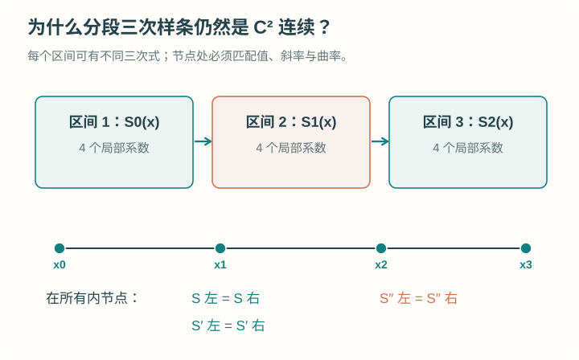
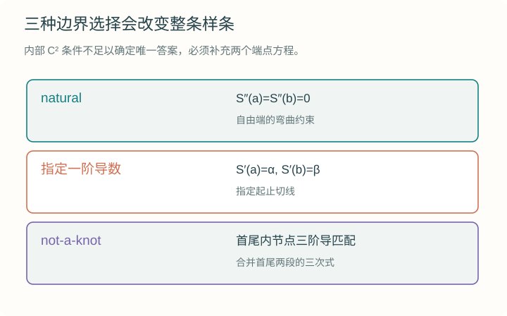
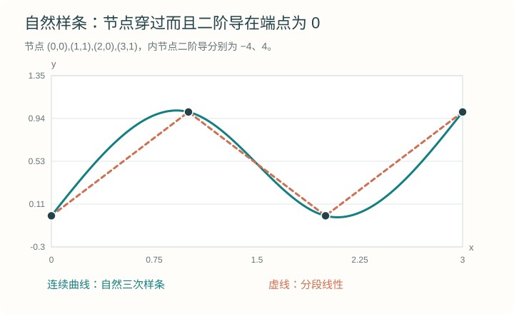

CHAPTER 06 · NUMERICAL ANALYSIS
三次样条：从 C² 连续到三对角求解
当曲线经过全部节点，还需要二阶导连续时，为什么端点条件决定了最终答案？从三次分段结构、节点二阶导到可运行的自然样条。
01 · 为什么一条平滑曲线还需要边界条件？
若用分段直线连接几个数据点，每个点都能被准确命中，但接缝处通常出现尖角。改用每段三次多项式后，能否只要求函数值和导数在节点连续，就得到唯一的整条曲线？答案是仍然不够：三次样条的内节点条件还需要两条端点约束。
设互异且严格递增的节点为 x₀<⋯<xₙ，有 n 段、每段四个三次系数，总计 4n 个未知量。通过两端数据的插值要求共 2n 条方程；每个内节点要求一阶、二阶导数连续，共 2(n−1) 条。加起来只有 4n−2 条独立条件，因此还缺两个。

02 · 用节点二阶导数替代每段四个系数
逐段独立求四个系数既冗长又难检查。更有结构的做法是把节点处二阶导数记为 Mᵢ=S″(xᵢ)，步长为 hᵢ=xᵢ₊₁−xᵢ>0，割线斜率为 dᵢ=(yᵢ₊₁−yᵢ)/hᵢ。每段二阶导数是线性的，把它积分两次，并使用两端插值条件，就得到一个局部三次式。
式 (6.1) 是完整的四项表达式：前两项描述端点二阶导带来的三次形状，后两项校正端点函数值。长公式可在其区域内横向滚动查看；四项均不可省略。
令内节点左右两段的一阶导数相等，得到节点二阶导数所满足的三对角系统：
此时求解的是 M₀,…,Mₙ，不是每段完整的四个系数。内部的三对角结构意味着求解可以用专门的 Thomas 消去法，而不必构造稠密矩阵。
03 · natural、指定端点导数与 not-a-knot
常见的三种边界方式有不同的数学含义。Natural（自然边界）指定 M₀=Mₙ=0，即两端二阶导数为零，但并不要求两端一阶导数为零。指定端点一阶导数则给定 S′(x₀)=α 与 S′(xₙ)=β；注意 SciPy 的字符串 bc_type="clamped" 是特殊的零斜率情况，任意非零斜率需使用元组形式指定。
not-a-knot要求第一、第二段在第一个内节点的三阶导数一致，末端两个区间同理。它在通常拥有至少四个节点时表达为“两边像一条三次多项式那样”相连；数据点很少时 SciPy 有专门的约定，不能机械套用通式。

04 · 用四个节点手算一遍自然样条
取等距节点 x=[0,1,2,3]，值 y=[0,1,0,1]，自然边界给出 M₀=M₃=0。因为相邻割线斜率是 1,−1,1，内部两条方程为 4M₁+M₂=−12 和 M₁+4M₂=12，所以 M=[0,−4,4,0]。
第一段 [0,1] 可化为 S₀(x)=5x/3−2x³/3，所以 S(0.5)=0.75。线性插值在此处给出的值只有 0.5；两个结果都经过端点，但平滑约束改变了内部弯曲。

05 · 无依赖三对角求解与边界检验
下面只实现自然三次样条的节点二阶导求解。它不是泛用的 not-a-knot 或任意指定斜率求解器。三对角矩阵在严格递增节点下可按 Thomas 法消去，避免原实现中“边界名称齐全但右端项未定义”的问题。
def natural_second_derivatives(x, y):
n=len(x)
assert n>=2 and len(y)==n
h=[x[i+1]-x[i] for i in range(n-1)]
assert all(v>0 for v in h)
low=[0.0]*n; diag=[1.0]*n
up=[0.0]*n; rhs=[0.0]*n
for i in range(1,n-1):
low[i]=h[i-1]
diag[i]=2*(h[i-1]+h[i])
up[i]=h[i]
rhs[i]=6*((y[i+1]-y[i])/h[i]
-(y[i]-y[i-1])/h[i-1])
for i in range(1,n):
k=low[i]/diag[i-1]
diag[i]-=k*up[i-1]
rhs[i]-=k*rhs[i-1]
M=[0.0]*n
for i in range(n-1,-1,-1):
M[i]=(rhs[i]-up[i]*M[i+1])/diag[i]
return M
M=natural_second_derivatives([0,1,2,3],[0,1,0,1])
assert all(abs(a-b)<1e-12 for a,b in zip(M,[0,-4,4,0]))
print(M) # [0.0, -4.0, 4.0, 0.0]在接近重复节点或数值极端尺度时，算法还需要额外的缩放与浮点异常处理。实际生产环境可选 scipy.interpolate.CubicSpline(x,y,bc_type="natural")；若已知非零端点导数，应使用 bc_type=((1,left_slope),(1,right_slope))，而不是错误地以字符串 "clamped" 代表任意斜率。
原始资料与延伸阅读
公式与适用条件依据这些参考文献核对；图解与教学算例均为本仓库独立构造，不直接复用文献图片。
- SciPy · CubicSpline 官方参考：natural / clamped / not-a-knot 边界条件定义，以及端点和特殊节点情形。
- SciPy · make_interp_spline：插值样条构造与边界条件的另一套接口。